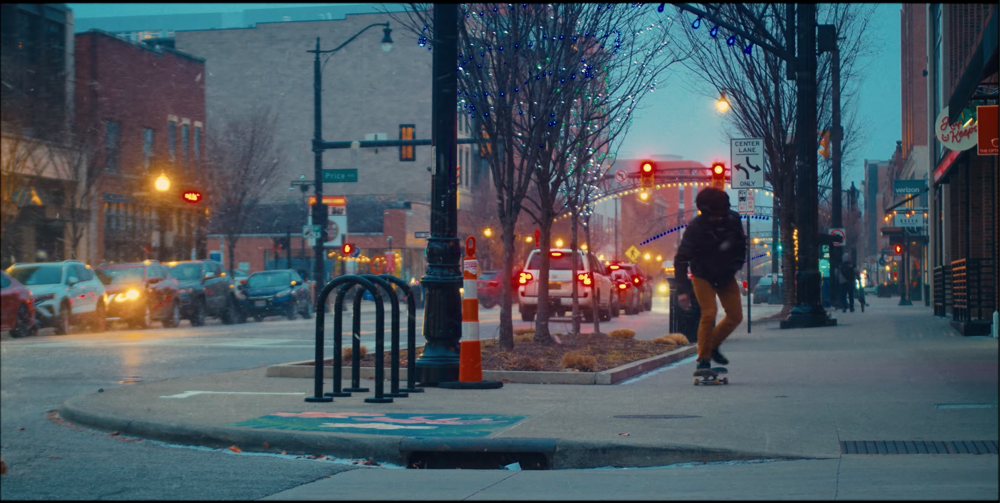
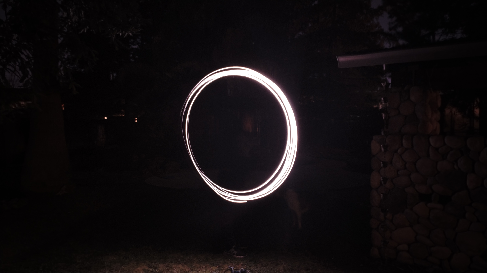
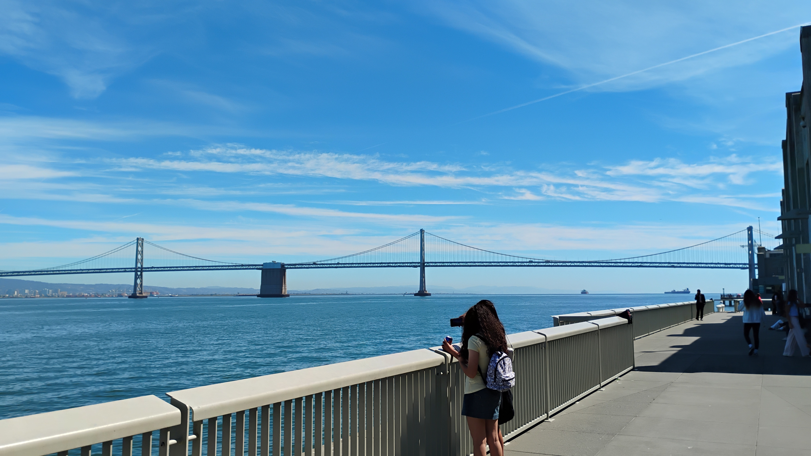
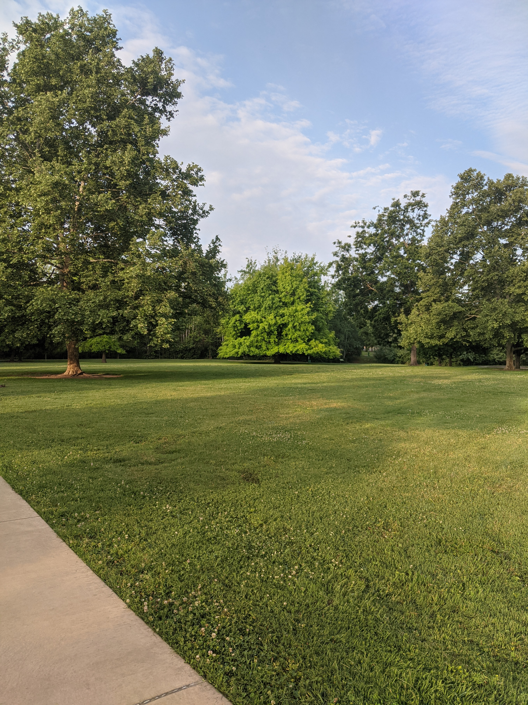
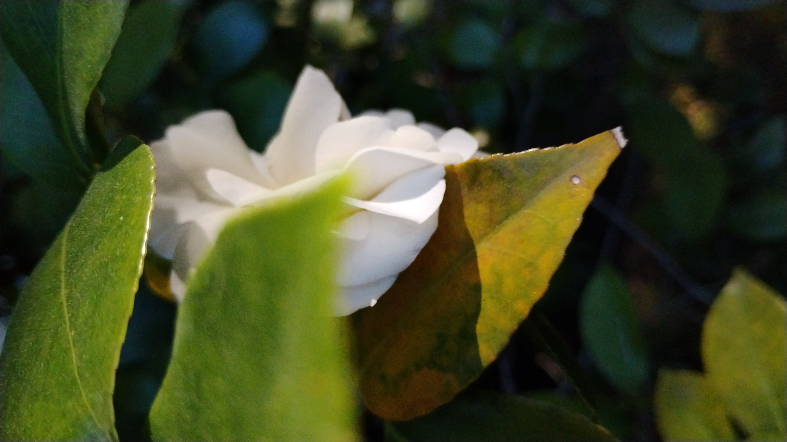
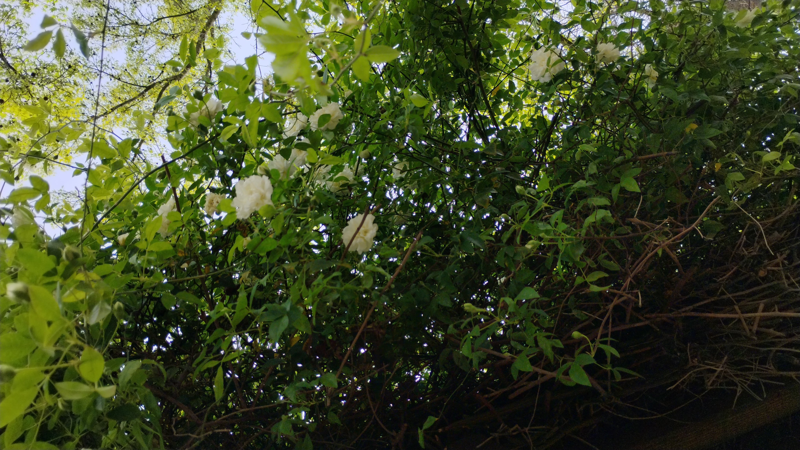
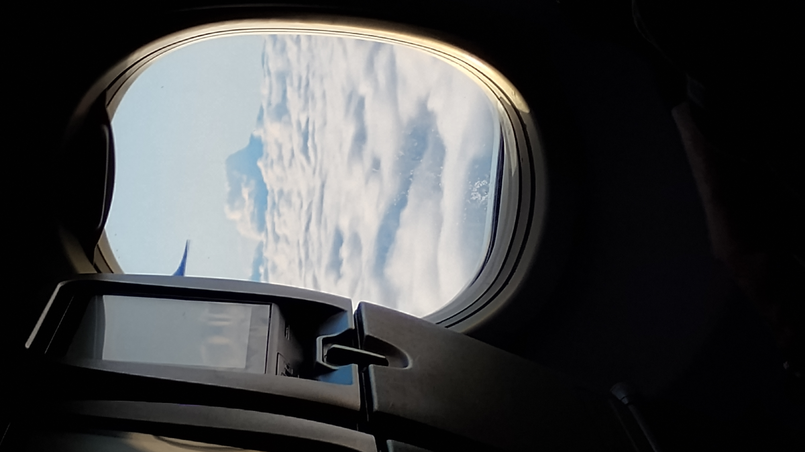
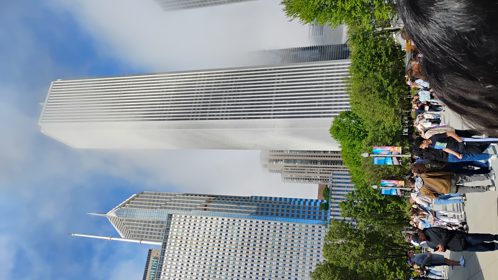
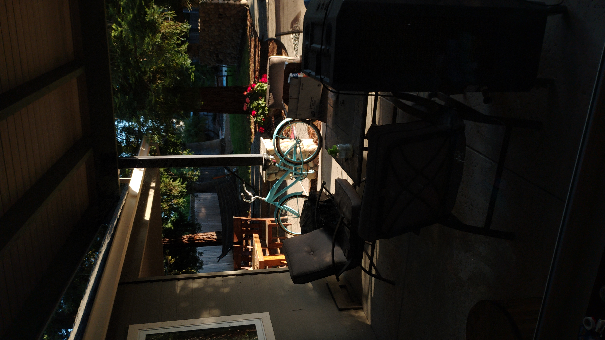
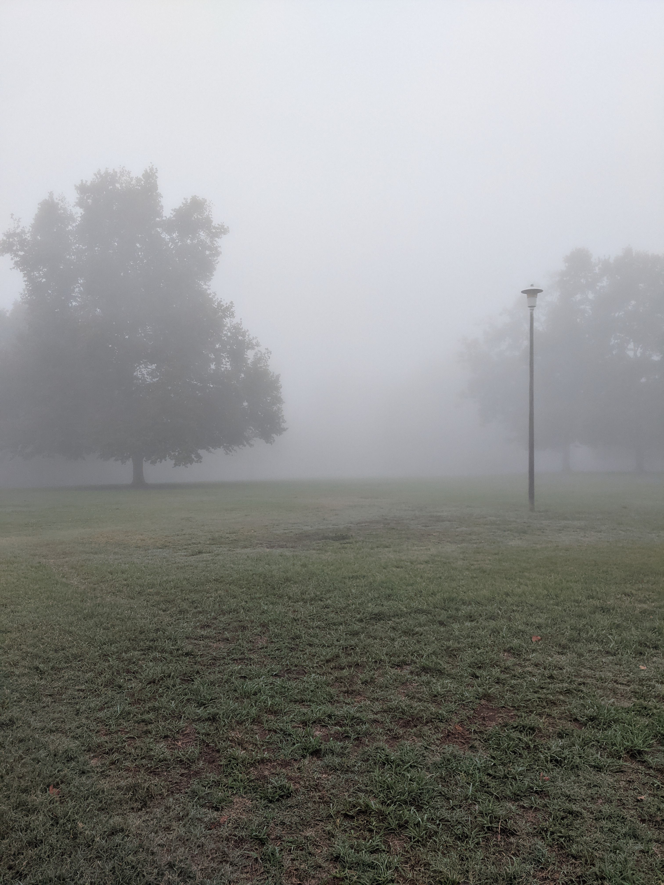

filmmakeing:



I have alawys loved movies and films for aslong as i can remeber but recently i have been very intersetd in makeing cinematic short film! or at least filming in this style, the pictures are from 3 of my favorite youtubers who film in this style! The first one is sleepy charlie the second is flinch and the third is aldin robins. I have recently borred my dads Nikon D60 and while i am still figureing how to get a decent shot on it, its been load of fun takeing pictures
I think the coolest name for a short film like this would be testemony to spontinuity wich i def spelled right and def did not steal from another youtube video. I love traning motages in movies and i want to make one someday. My biggest problem with filming isnt the actual filming part its the editing lol i am not a terrible editor but i def still need some work. I just always end up filming then never editing the fotage.
Since i havent been interessted in this for a super long time i havent really made any attempts of makeing my own short film besides my history day project, and a short trailer i made with my friend when we were bored one day. Both of these videos are realllllllllly bad but you should note that i have been getting better at filming just most of the stuff i record with my dads camera are random shots. Something i really wanna learn is color grading beacuse that what honeslty kinda makes or breaks that cinemtaic look im going for.
gallery:
(photos i took)
.jpg)

.jpg)







